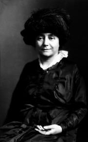
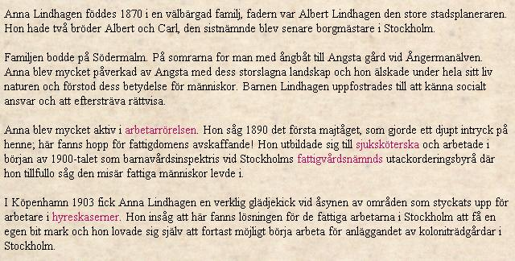
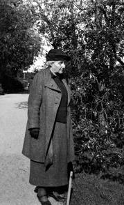
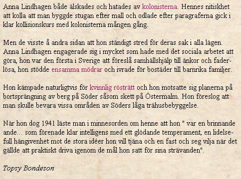

Södermalm i tid och rum. Stockholm


Ur Stockholmsliv II, Staffan Tjerneld, 1950
Det andra kvarteret med relativt obruten 1700-talsmiljö ligger mellan Fjällgatan och Stigbergsgatan och har fröken Anna Lindhagen att tacka för att det bevarats. Hon var dotter till stadsplaneraren Albert Lindhagen som vi så många gånger tidigare mött och var född på Söder även om hon växt upp norr om Strömmen. Hon återvände emellertid till Söder och lyckades genom den energi, som hon ärvt av sin far, få dessa Fjällgatskvarter skyddade. Och hon nöjde sig inte bara med det yttre, i sina borgarrum som visas för allmänheten har hon skapat några tidstypiska interiörer, medan den delvis vildvuxna trädgården även den skall ge en bild av äldre tider. Där hittar man alltså i skuggan under trädkronorna temyntan,


|
Under några år i slutet av 1920-talet och början av
1930-talet bodde Anna Lindhagen i en liten våning
högst upp i 31-an, "två vindsrum och knappt det",
noterar en reporter från Vecko-Journalen som besöker henne. Egentligen bodde hon bara i det
ena
rummet, "arbetsrummet". Det större rummet kallades "studierummet" och användes i hög grad
för
föredrag och kurser. Bland annat anordnades en
kurs i bokbinderi för ungdomar, avgiften bestod i
att eleverna hjälptes åt med att sörja för städning
och eldning av rummet. I studierummet fanns en
vävstol och en taffel, det var annars möblerat med
en möbel från mitten av 18oo-talet samt några äldre saker. "Denna blandning var typisk för ett
hem
på 1860-talet", berättar Anna Lindhagen för intervjuaren. "Man hade ärvt gamla möbler och
ställde
dem självfallet bland de nyare, utan tanke på att de
ej skulle passa i stil." (Så har man också senare
möblerat Stigbergets borgarrum.) Anna Lindhagen (1870-1940) var dotter till den man som framlade 1866 års stora och omvälvande stadsplan, justitierådet Albert Lindhagen. Borgmästaren Carl Lindhagen var hennes bror. Själv var hon inspektris vid Stockholms fattigvårdsnämnds fosterhemsinspektion och verksam på många områden, bl.a. en pionjär för kolonistugerörelsen. Hon var stadsfullmäktig åren 1911-1923 och medlem av stadens skönhetsråd. Man kan väl också kalla henne för Fjällgatans speciella och idogt vakande skyddsängel. Vi kommer att möta henne i flera av gatans hus.
|